Visual Odometry: Stereo Camera VS Monocular Camera and compared with Deep Learning Model
Rutvik Dagadkhair, Rakesh OmprakashFall 2023 ECE 4554/5554 Computer Vision: Course Project
Virginia Tech
Abstract
Visual odometry gives accurate information where conventional sensors like wheel odometer and inertial sensors like gyroscopes and accelerometers give inaccurate information. Visual odometry finds the vehicle motion from a sequence of camera images taken from an onboard camera. Visual Odometry during autonomous driving can be achieved using Stereo And Monocular Camera. The objective of this project is to compare the results of the two types of cameras and also compare it with a Deep Learning Model. In this project visual odometry has been performed by the following methods such as Monocular Visual Odometry using Feature tracking and Optical flow, Stereo Visual Odometry using Feature Tracking and Optical flow and comparison with Monocular Visual Odometry using Deep Learning. The results of the mentioned methods are plotted on a graph where the ground truth pose values from the KITTI dataset is plotted against the estimated pose from each method.Teaser figure


Introduction
An important feature for autonomous robot mobility is localization. Visual odometry(VO) is very popular for robot localisation in which ego-motion is calculated with only cameras. And cameras use lesser energy than sonar or laser range-finder. As the usage of energy it benefits the execution of the purpose of the robot by extending the time duration of deployments etc. Popular ways of performing visual odometry are using Monocular camera and Stereo camera.In Monocular Visual Odometry a single camera is used to capture motion. During Monocular VO when estimating the motion the pose of every tracked feature points is calculated using a five-point pose algorithm. Then the 3d position of every detected feature is estimated with the first and last acquired images. The 3d point information is used for the calculation of the 3d pose of the camera.
In Stereo VO a calibrated stereo camera pair is used. During Stereo VO corresponding feature points of the image pairs are found and world 3d points of those feature points are calculated using triangulation. Then, the pose of the camera is found using the 3d points. Some challenges with stereo visual odometry are it is computationally expensive, time consuming and if the texture is repetitive and of high frequency there will be ambiguity in best match determination.
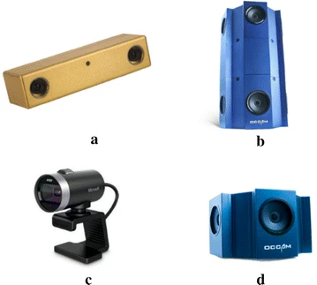
Approach
Monocular Vision Odometry using Optical Flow

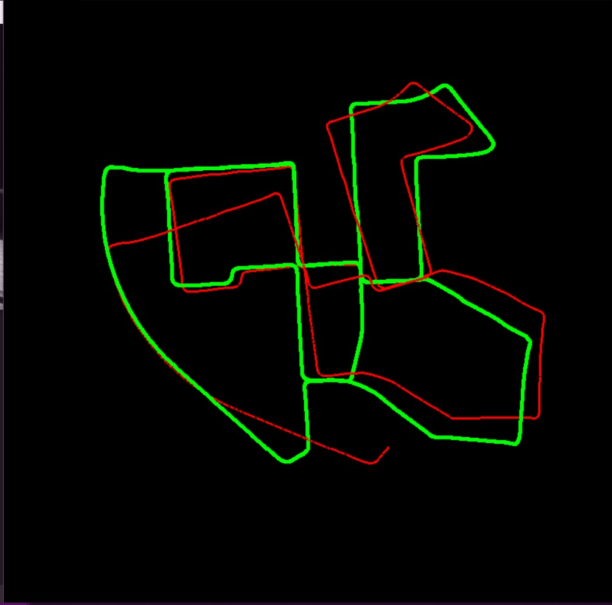
1.Undistoritng image using camera calibration matrix. 2.Use feature detectors at the first loop to detect features 3.Tracking the detected features using optical flow. 4.Outliers are rejected using RANSAC. 5.For motion detection essential matrix was calculated using two consecutive frames and decomposed to get rotation and translation. 6.Another feature detection is triggered it the number of features being followed falls beyond a certain number. 7.For scaling, the ground truth was taken as a reference and reused the reference when another threshold was exceeded.
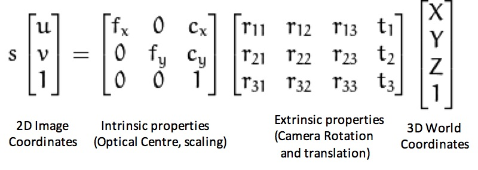

Challenges:
For the monocular camera approach, scaling from the pixel-level displacements to 3D coordinate displacements is a big issue. It could be seen that for the optical flow approach if the features are detected over a moving object, that reduces the number of points to be tracked drastically. Which induces a sudden error at times.
Big challenges:
Dealing with such a vast dataset for the first time, where the camera calibration but the sensor suite need to be understood.
Stereo Vision Odometry using Optical Flow

We are calculating Visual odometry of the Vehicle in the Kitti dataset on which stereo camera is mounted. The Kitti dataset contains the left and right image sequences taken from the stereo camera. We are finding the corresponding feature points in the left and right image. First the left image features are found. Disparity values between the left and right image pair is found with cv2.StereoSGBM_create. Then the corresponding right feature points are found by subtracting the disparity values with the left feature points.
For detecting the features in the left images we are using FAST descriptor. The reason for choosing the FAST descriptor is because it is faster compared to other descriptors. The left image is split into tiles of smaller image and in those image tiles the feature points are detected. Finally the features points from all the tiles are combined together to get the total feature points of that image. This method is done because when using the FAST descriptor without splitting the images, the detected features points are not spread out throughout the image. Only in certain parts of the image the feature points are detected. Hence, a function is used to split the images into tiles to get feature points throughout the image. As mentioned before the corresponding right feature points are found by subtracting the disparity values with the left feature points.
Then using triangulation we find the corresponding 3d points of those left and right image feature points. The function cv2.triangulatepoints is used for it. Using 6 random features points we find the transformation matrix using least_squares function from the scipy.optimise library by passing the 6 random left image feature points and 6 random right image feature points and their corresponding 3d points. For getting good transformation matrix a threshold value is used to filter out the bad transformation matrices. This threshold value is found by projecting the 3d points of the features points from the “T+1 th” image to the “T th” image and similarly projecting the 3d points from the “T th” image to the “T+1 th” image and subtracting those projected values with the already know values of the corresponding features points in the “T th” image and “T+1 th” image respectively.

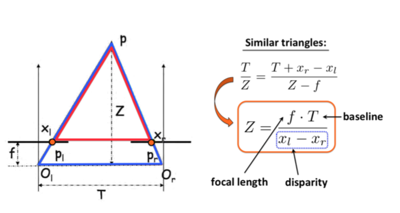
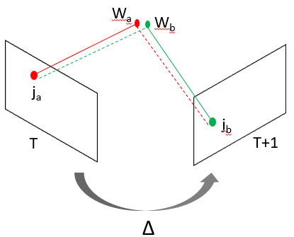
We multiply the transformation matrix with the pose of the vehicle(the first pose value is taken from the ground truth value) to get the next pose and we update the transformation matrix and multiply it with the current pose to get the next pose and so on.
We multiply the transformation matrix with the pose of the vehicle(the first pose value is taken from the ground truth value) to get the next pose and we update the transformation matrix and multiply it with the current pose to get the next pose and so on.
Monocular Visual Odometry using Deep learning
Monocular Visual Odometry using Deep Learning has been implemented directly from [6]. We have not written that code. We have used this deep learning model to compare with our methods.
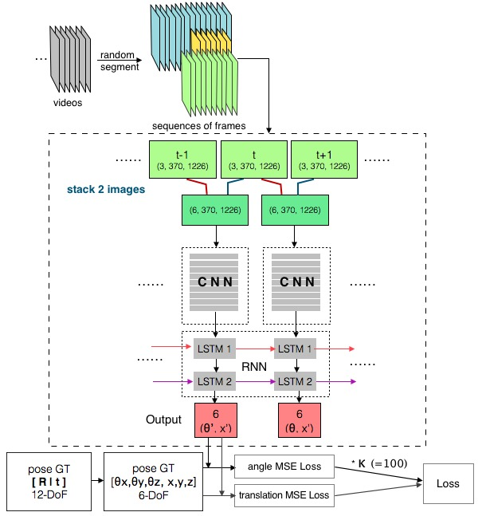
Experiments and results


Dataset: KITTI VO Dataset contains 22 driving sequences. Stereo image sequences are captured when the vehicle goes around local communities and highways.With the help of Velodyne laser scanner and GPS system the ground truth is given. But 11 sequences with ground truth are publicly accessible. Sequences 11 to 21 are allocated for test and ranking of various Visual Odometry algorithms.
Monocular Visual Odometry using Optical Flow
An important parameter which affects the estimated pose is minimum number of features to be tracked in optical flow. If the number of features to be tracked is low it gives less precision and accuracy and if the number of features to be tracked is high it gives higher precision but becomes computationally expensive.Stereo Visual Odometry using Optical Flow
The error between the calculated path and the ground truth values is calculated and is shown in the output graph. This error is also separately plotted on another graph. The error value which is calculated is the accumulated error values throughout the calculated path.Important Parameters which affect the results are 1) number of random features points in line 161 in the function def calculatepose, 2) max_error in the function def trackkeypoints, 3) max_iter in the function def calculatepose, 4) threshold in def calculatepose.
Max_iter : Increasing the value of max_iter slightly affects the execution time of the code. After running the code for 4 different parameter values such as 100, 10, 500, 2000 only for the 500 value it shows greater error compared to other values.
max_error : When giving different values to max_error the execution time is not affected at all. The output error from the function cv2.calcOpticalFlowPyrLK gives a lesser value if the feature points are tracked correctly and a greater value if the feature points are not tracked correctly. The tracked features points which have error values higher than max_error are excluded. The values that were used for max_error are 4, 10, 3, 20, 6, 8 and out of them 20 increases the error output significantly.
threshold : The execution time is not affected by changing the threshold value. By using the values 5,3,7,10,15 and 25 for threshold variable the error value does not have a significant change.
Number of random variables : The execution time is not affected when changing the number of random variables. The number of random variables was set to different values such as 6, 10 and 3 in which the value 10 gave a higher error than 6 and 3. Therefore using more random variables was not useful.
Monocular Visual Odometry using Deep Learning
The important parameters which affect the results when performing Monocular Visual Odometry using Deep Learning are Learning rate and Batch size.Learning rate - A higher learning rate takes less computational time but does not reduce the error below a certain value on the other hand for a smaller learning rate a lower error value can be reached at the cost of higher computation. Future work may include implementation of decaying learning rate approach.
Batch size - If the batch size is bigger the features detected by the convolutional neural networks are more general than a smaller batch size making it less sensitive for the predictions in different environments.
Qualitative Results
Stereo Visual Odometry using Optical Flow


Monocular Visual Odometry using Optical Flow
In the output graphs below the green line indicates the ground truth and the red line indicates the estimated path
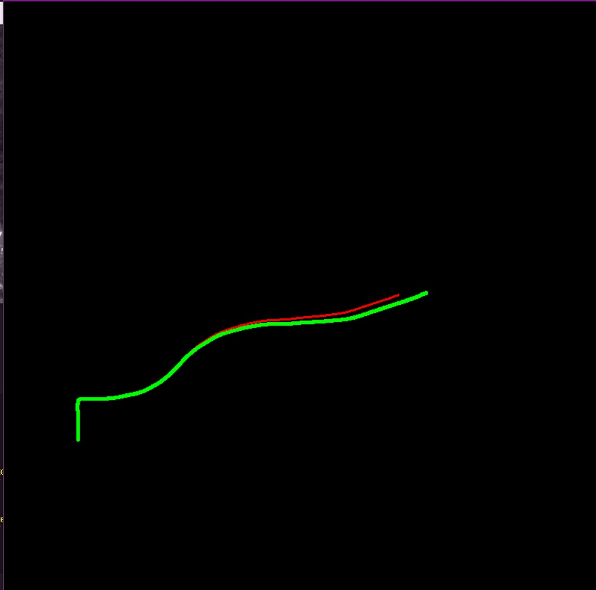
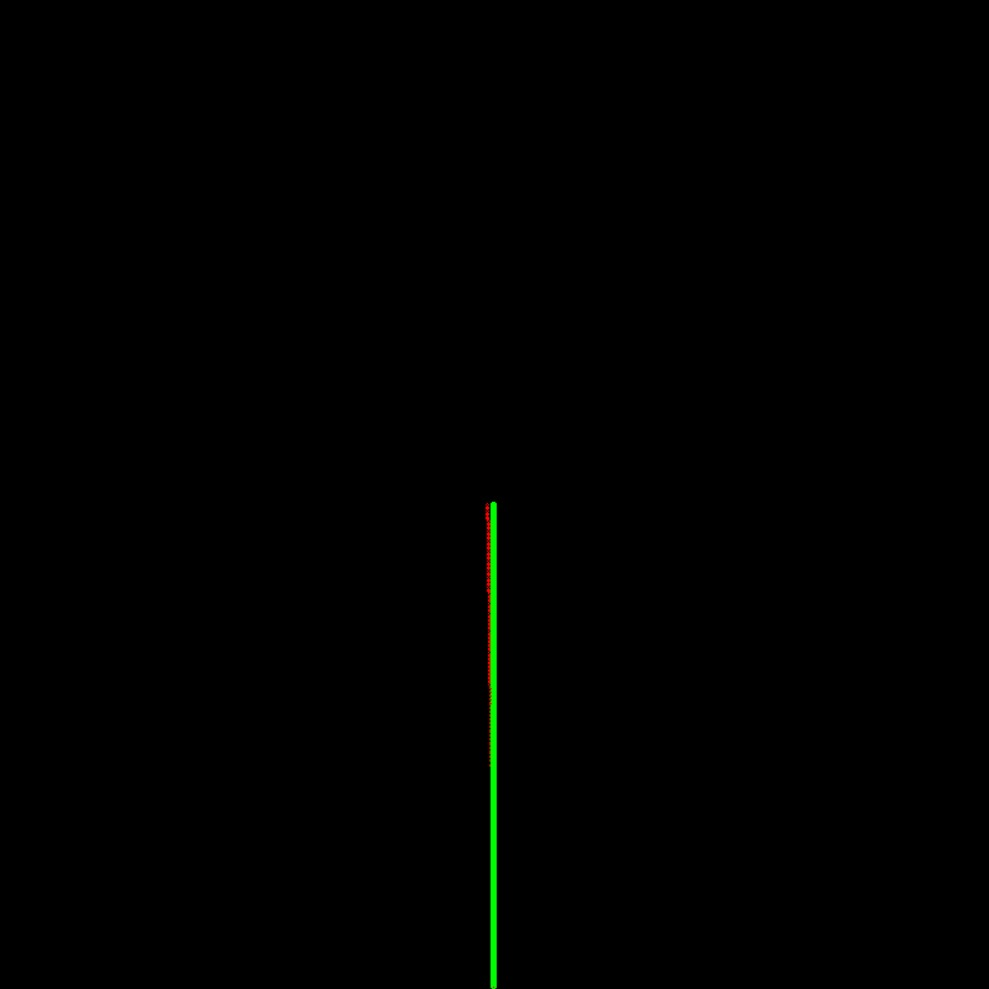
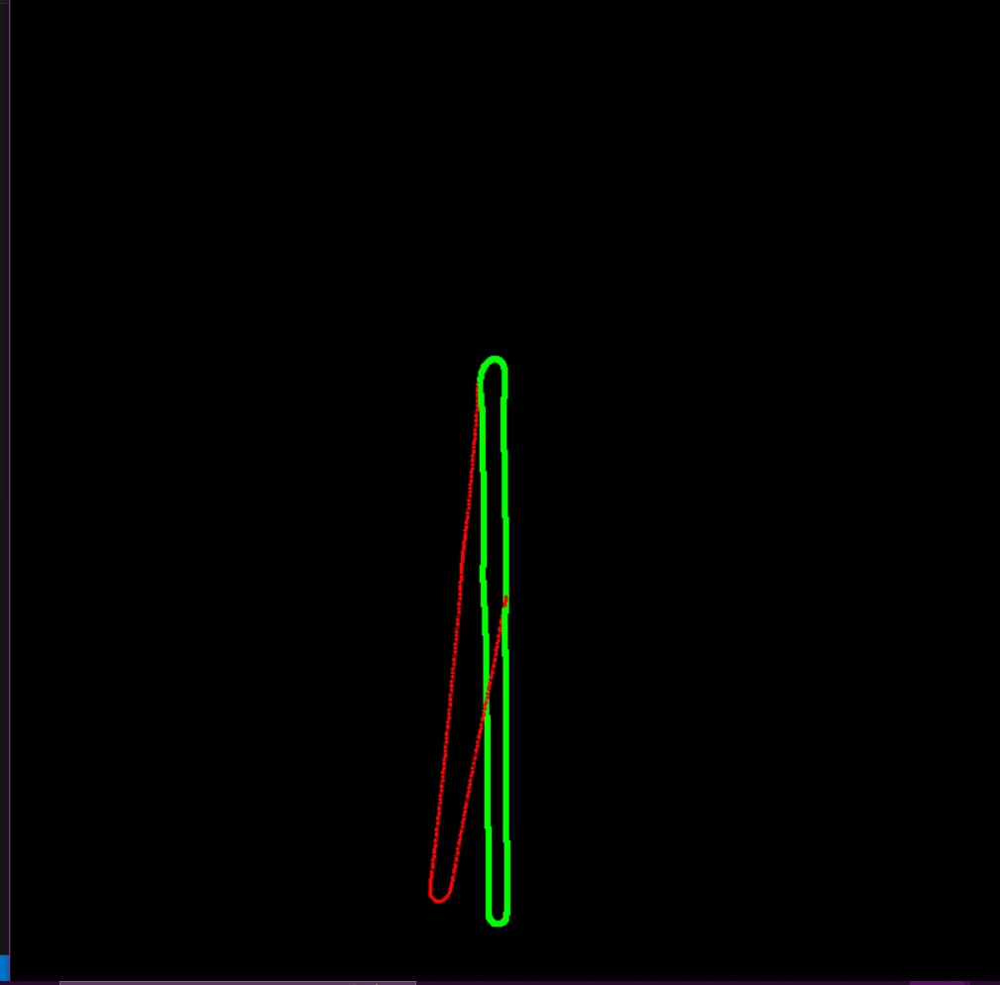
For the 4th and 5th dataset, the estimated path is not as accurate it is due to moving object shadows, scale error and sudden or abrupt turns of the vehicle
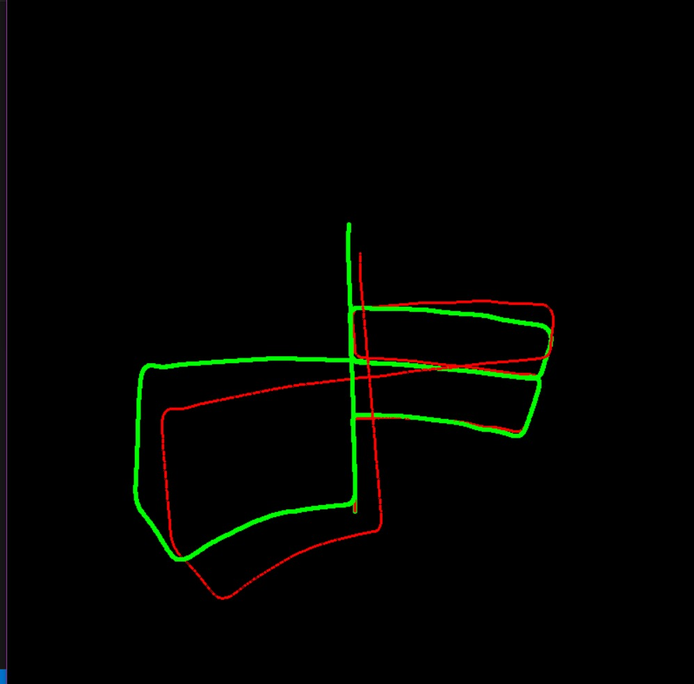
Monocular Visual Odometry using Deep learning
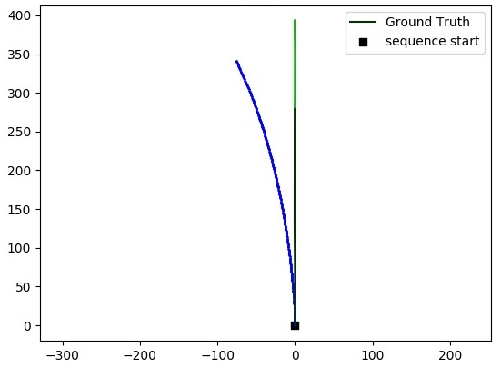
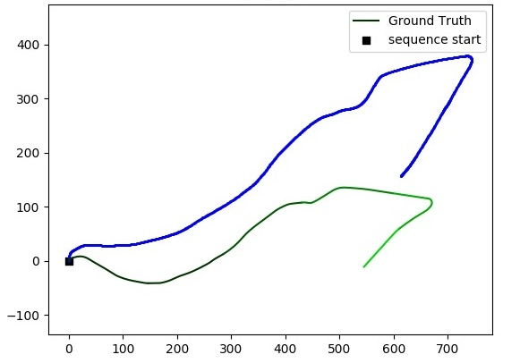
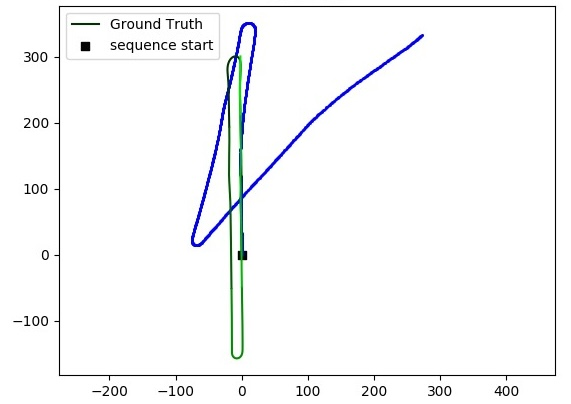
Conclusion
The Stereo VO proves to be better than Monocular VO since it has drawbacks like scale ambiguity, lack of depth information. Out of the 4 methods, Monocular VO using Optical flow and Feature Tracking and Stereo VO using Optical Flow and Feature Tracking the Optical Flow methods proved to be more accurate. But compared to these methods, the Visual Odometry using Deep Learning model proved to be superior in accuracy. The Stereo VO using Deep Learning can be a better option as it combines the advantages of the Stereo VO and the Deep Learning model.References
1.https://www.cvlibs.net/datasets/kitti/index.php2.https://cgarg92.github.io/Stereo-visual-odometry/
3.https://www.mdpi.com/2076-3417/13/10/5842
4.https://github.com/fshamshirdar/DeepVO
5.https://df-vo.readthedocs.io/en/latest/rsts/examples.html
6.https://github.com/ChiWeiHsiao/DeepVO-pytorch/blob/master/Readme.md